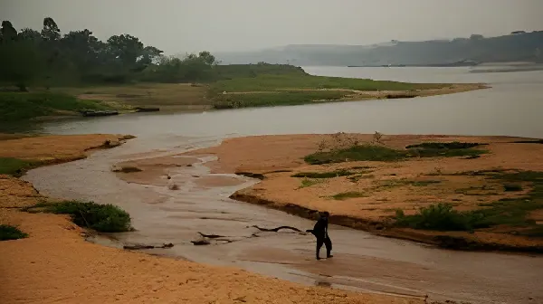

Pays enclavé sans accès à la mer, le Paraguay dépend de ses fleuves comme d'une artère vitale. Depuis 2019, des sécheresses historiques frappent le bassin du Río Paraguay, menaçant l'hydroélectricité, le commerce et des millions d'habitants. Derrière la crise climatique se révèlent des tensions géopolitiques anciennes autour du partage de l'eau dans le cône sud.
Le Paraguay est une exception géographique en Amérique du Sud : pays doublement enclavé, il ne partage aucune frontière maritime et dépend exclusivement du Río Paraguay et du Río Paraná pour son accès au commerce mondial. Ces deux fleuves sont à la fois ses routes commerciales, ses sources d'énergie et l'épine dorsale de son agriculture. Or depuis 2019, le bassin versant du Río de la Plata connaît des étiages d'une sévérité inédite depuis le début des relevés hydrométriques au XIXe siècle.
La sécheresse de 2020–2023 a constitué un choc systémique : le niveau du Río Paraguay à Asunción a atteint des niveaux historiquement bas, interrompant la navigation commerciale sur des sections critiques, réduisant de près de 40 % la production hydroélectrique du barrage d'Itaipú — co-exploité avec le Brésil — et provoquant des pénuries d'eau potable dans plusieurs villes de la région du Chaco.
Les scientifiques rattachent la récurrence et l'intensité de ces sécheresses à deux phénomènes conjugués : la déforestation accélérée dans les bassins versants (Pantanal brésilien, Cerrado) qui réduit la capacité de rétention d'eau des sols, et le dérèglement climatique qui modifie les régimes de précipitations dans toute la région. La déforestation paraguayenne est particulièrement préoccupante : le Paraguay figure parmi les pays au taux de déforestation le plus élevé au monde par rapport à sa surface forestière restante, principalement au profit de l'expansion du soja et de l'élevage extensif.
Le Chaco paraguayen, qui représente plus de 60 % du territoire national, a perdu depuis 2000 une proportion alarmante de sa végétation native. Cette pression anthropique aggrave les effets des sécheresses en réduisant l'évapotranspiration et l'alimentation naturelle des nappes phréatiques qui nourrissent les fleuves en saison sèche.
Début de la sécheresse exceptionnelle. Premiers alertes sur la baisse du Río Paraguay. Baisse significative de la production d'Itaipú.
Niveau historiquement bas du fleuve à Asunción : −4,1 m sous la cote de référence. Navigation interrompue sur plusieurs sections. Crise d'eau potable dans le Chaco.
Le gouvernement Abdo décrète l'état d'urgence hydrologique. Premières négociations trilatérales Paraguay-Brésil-Argentine sur la gestion du bassin du Plata.
Prise de fonctions du président Santiago Peña (ANR, Colorado). La crise de l'eau devient un dossier prioritaire de la nouvelle administration.
Renégociation de l'annexe C du traité d'Itaipú (partage des revenus et de l'énergie entre le Paraguay et le Brésil). Enjeu central de la diplomatie paraguayenne.
Légère remontée des niveaux fluviaux, mais persistance de la sécheresse dans le Chaco. Débats sur la privatisation partielle de l'ANDE (opérateur électrique national) et sur la politique tarifaire de l'eau.
Le barrage d'Itaipú, construit entre 1975 et 1984 sur le Río Paraná à la frontière avec le Brésil, est le symbole ambivalent de la puissance et de la dépendance paraguayenne. Avec une capacité installée de 14 000 MW, il reste l'une des plus grandes centrales hydroélectriques du monde et fournit au Paraguay 100 % de son électricité nationale — avec d'immenses surplus revendus au Brésil à des tarifs fixés par le traité de 1973.
Le traité d'Itaipú expire en 2023 pour ses clauses tarifaires (Annexe C), ouvrant une renégociation cruciale. Le Paraguay réclame de longue date une revalorisation substantielle du prix de l'énergie cédée au Brésil — jugé massivement sous-évalué depuis des décennies. Asunción exige également le droit de vendre son énergie sur le marché libre brésilien, ce que Brasília a jusqu'ici refusé, préférant conserver le monopole de distribution.
| Indicateur Itaipú | Données clés |
|---|---|
| Puissance installée | 14 000 MW |
| Part Paraguay | 50 % (dont ~80 % cédés au Brésil) |
| Prix de cession (2023) | ~6 USD/MWh (marché brésilien : 50–80 USD) |
| Contribution au PIB PY | ~5–7 % via redevances |
| Impact sécheresse 2023 | −40 % de production |
La crise de l'eau remet au premier plan une tension géopolitique ancienne : la rivalité autour du contrôle des ressources hydriques dans le bassin du Río de la Plata, l'un des plus grands du monde. Le Paraguay se retrouve en position délicate entre ses deux géants voisins, le Brésil et l'Argentine, qui co-gèrent avec lui les deux principaux barrages du pays (Itaipú et Yacyretá).
La négociation de l'Annexe C d'Itaipú cristallise toutes ces tensions. Le Brésil de Lula, confronté à ses propres tensions énergétiques, ne montre pas d'empressement à revaloriser les tarifs au bénéfice d'Asunción. Le Paraguay, fort du soutien diplomatique discret de Washington — en particulier dans le contexte de sa reconnaissance de Taïwan, unique en Amérique du Sud — tente de jouer de cette carte dans la négociation.
« L'eau n'est pas seulement une ressource naturelle pour le Paraguay — c'est notre pétrole, notre accès au monde, notre survie. »
— Santiago Peña, président de la République du Paraguay, septembre 2023« Nous produisons l'électricité la moins chère d'Amérique du Sud et nous n'avons pas les moyens de payer nos factures d'hôpital. »
— Résidente d'Asunción, témoignage collecté par La Nación PY, mars 2024Face à la crise, le gouvernement Peña a lancé plusieurs initiatives : un plan national de gestion des ressources en eau visant à réduire les pertes dans le réseau d'adduction, un programme d'extension des forages dans le Chaco pour accéder aux nappes profondes, et des négociations avec la Banque interaméricaine de développement (BID) pour financer des infrastructures hydrauliques résilientes.
Sur le plan législatif, un projet de loi sur la ressource en eau (Ley de Aguas), débattu depuis des années au Congrès, connaît un regain d'intérêt sous la pression de la crise. Ses détracteurs — notamment les grands propriétaires agricoles et les entreprises agroexportatrices — s'y opposent, craignant des restrictions à l'usage de l'eau d'irrigation dans un secteur où le soja représente 40 % des exportations.
La crise fluviale paraguayenne n'est pas seulement une catastrophe naturelle : elle est le révélateur de contradictions structurelles profondes. Un modèle de développement fondé sur l'agro-exportation intensive détruit les écosystèmes qui garantissent la ressource en eau dont il dépend. Une géographie politique enclavée fait de la diplomatie fluviale une question de survie nationale. Et une dépendance historique aux revenus d'Itaipú a longtemps dispensé le pays de diversifier son économie. L'issue de la renégociation du traité binational avec le Brésil, conjuguée à la capacité de l'État à imposer un modèle de gestion durable des ressources naturelles, dessinera l'avenir d'un pays dont la richesse et la vulnérabilité partagent la même source : l'eau.
País mediterráneo sin acceso al mar, Paraguay depende de sus ríos como de una arteria vital. Desde 2019, sequías históricas golpean la cuenca del río Paraguay, amenazando la hidroelectricidad, el comercio y millones de habitantes. Detrás de la crisis climática se revelan tensiones geopolíticas antiguas en torno al reparto del agua en el Cono Sur.
Paraguay es una excepción geográfica en América del Sur: país doblemente mediterráneo, no comparte ninguna frontera marítima y depende exclusivamente del río Paraguay y del río Paraná para su acceso al comercio mundial. Estos dos ríos son a la vez sus rutas comerciales, sus fuentes de energía y la columna vertebral de su agricultura. Ahora bien, desde 2019, la cuenca del Río de la Plata experimenta estiajes de una severidad inédita desde el inicio de los registros hidrométricos en el siglo XIX.
La sequía de 2020–2023 constituyó un choque sistémico: el nivel del río Paraguay en Asunción alcanzó niveles históricamente bajos, interrumpiendo la navegación comercial en tramos críticos, reduciendo casi un 40 % la producción hidroeléctrica de la represa de Itaipú —coexplotada con Brasil— y provocando escasez de agua potable en varias ciudades de la región del Chaco.
Los científicos vinculan la recurrencia e intensidad de estas sequías a dos fenómenos conjugados: la deforestación acelerada en las cuencas hidrográficas (Pantanal brasileño, Cerrado) que reduce la capacidad de retención de agua en los suelos, y el cambio climático que altera los regímenes de precipitaciones en toda la región. La deforestación paraguaya es particularmente preocupante: Paraguay figura entre los países con mayor tasa de deforestación del mundo en relación con su superficie forestal restante, principalmente en beneficio de la expansión de la soja y la ganadería extensiva.
El Chaco paraguayo, que representa más del 60 % del territorio nacional, ha perdido desde el año 2000 una proporción alarmante de su vegetación nativa. Esta presión antrópica agrava los efectos de las sequías al reducir la evapotranspiración y la alimentación natural de los acuíferos que nutren los ríos en época seca.
Inicio de la sequía excepcional. Primeras alertas sobre el descenso del río Paraguay. Caída significativa de la producción de Itaipú.
Nivel históricamente bajo del río en Asunción: −4,1 m bajo la cota de referencia. Navegación interrumpida en varios tramos. Crisis de agua potable en el Chaco.
El gobierno Abdo declara el estado de emergencia hidrológica. Primeras negociaciones trilaterales Paraguay-Brasil-Argentina sobre la gestión de la cuenca del Plata.
Asunción del presidente Santiago Peña (ANR, Colorado). La crisis del agua se convierte en prioridad de la nueva administración.
Renegociación del Anexo C del tratado de Itaipú (reparto de ingresos y energía entre Paraguay y Brasil). Eje central de la diplomacia paraguaya.
Leve recuperación de los niveles fluviales, pero persistencia de la sequía en el Chaco. Debates sobre la privatización parcial de la ANDE y la política tarifaria del agua.
La represa de Itaipú, construida entre 1975 y 1984 sobre el río Paraná en la frontera con Brasil, es el símbolo ambivalente del poder y la dependencia paraguayos. Con una capacidad instalada de 14 000 MW, sigue siendo una de las mayores centrales hidroeléctricas del mundo y le suministra a Paraguay el 100 % de su electricidad nacional, con enormes excedentes revendidos a Brasil a tarifas fijadas por el tratado de 1973.
El tratado de Itaipú venció en 2023 para sus cláusulas tarifarias (Anexo C), abriendo una renegociación crucial. Paraguay reclama desde hace tiempo una revalorización sustancial del precio de la energía cedida a Brasil, considerado masivamente infravalorado durante décadas. Asunción exige también el derecho a vender su energía en el mercado libre brasileño, lo que Brasília ha negado hasta ahora, prefiriendo mantener el monopolio de distribución.
| Indicador Itaipú | Datos clave |
|---|---|
| Potencia instalada | 14 000 MW |
| Parte de Paraguay | 50 % (de los cuales ~80 % cedidos a Brasil) |
| Precio de cesión (2023) | ~6 USD/MWh (mercado brasileño: 50–80 USD) |
| Contribución al PIB PY | ~5–7 % vía regalías |
| Impacto sequía 2023 | −40 % de producción |
La crisis del agua vuelve a poner en primer plano una tensión geopolítica antigua: la rivalidad por el control de los recursos hídricos en la cuenca del Río de la Plata, una de las más grandes del mundo. Paraguay se encuentra en una posición delicada entre sus dos gigantescos vecinos, Brasil y Argentina, que codirigen con él las dos principales represas del país (Itaipú y Yacyretá).
La negociación del Anexo C de Itaipú cristaliza todas estas tensiones. El Brasil de Lula, enfrentado a sus propias tensiones energéticas, no muestra prisa en revalorizar las tarifas en beneficio de Asunción. Paraguay, apoyado discretamente por Washington —especialmente en el contexto de su reconocimiento de Taiwán, único en América del Sur—, intenta jugar esta carta en la negociación.
« El agua no es solo un recurso natural para Paraguay, es nuestro petróleo, nuestro acceso al mundo, nuestra supervivencia. »
— Santiago Peña, presidente de la República del Paraguay, septiembre de 2023« Producimos la electricidad más barata de América del Sur y no tenemos con qué pagar la factura del hospital. »
— Residente de Asunción, testimonio recogido por La Nación PY, marzo de 2024Frente a la crisis, el gobierno Peña lanzó varias iniciativas: un plan nacional de gestión de recursos hídricos para reducir las pérdidas en la red de abastecimiento, un programa de extensión de perforaciones en el Chaco para acceder a acuíferos profundos, y negociaciones con el BID para financiar infraestructuras hidráulicas resilientes.
En el plano legislativo, un proyecto de Ley de Aguas, debatido desde hace años en el Congreso, experimenta un resurgimiento de interés bajo la presión de la crisis. Sus detractores —en particular los grandes propietarios agrícolas y las empresas agroexportadoras— se oponen a él, temiendo restricciones al uso del agua de riego en un sector donde la soja representa el 40 % de las exportaciones.
La crisis fluvial paraguaya no es solo una catástrofe natural: es el síntoma de contradicciones estructurales profundas. Un modelo de desarrollo basado en la agro-exportación intensiva destruye los ecosistemas que garantizan el recurso hídrico del que depende. Una geografía política mediterránea hace de la diplomacia fluvial una cuestión de supervivencia nacional. Y una dependencia histórica de los ingresos de Itaipú ha dispensado durante mucho tiempo al país de diversificar su economía. El desenlace de la renegociación del tratado binacional con Brasil, sumado a la capacidad del Estado para imponer un modelo sostenible de gestión de los recursos naturales, dibujará el futuro de un país cuya riqueza y vulnerabilidad comparten la misma fuente: el agua.